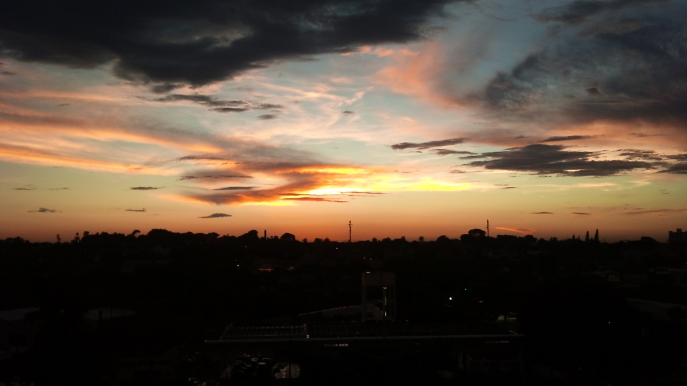

Procuramos inquilinxs para apartamento de dois quartos em Campinas. Peço ajuda dxs leitorxs para encontrar interessadxs. Se quiserem, me procurem. Segue abaixo a história completa.
No começo de 2012, logo após começar o mestrado no Labjor, comecei a procurar um lugar para morar em Campinas. Ubatuba fica longe demais para ir e voltar toda semana. Minha companheira e minha filha (e a cocker) viriam junto, então tínhamos algumas condições: precisávamos de algum lugar com dois quartos, amigável para crianças e cachorros. Também precisava ser um lugar suficientemente seguro: as meninas ficariam sozinhas enquanto eu estivesse na Unicamp, e também viajaríamos bastante - às vezes por mais de três semanas. Outras condições eram ter alguma infraestrutura por perto, para poder fazer coisas a pé ou de bicicleta, ser bem iluminado e ter lugar para guardar o carro.
Comecei, obviamente, procurando em Barão Geraldo, a região onde fica a Unicamp. Encontrei um monte de quitinetes e edículas que, invariavelmente, não aceitavam crianças. Encontrei algumas casas que eram muito grandes ou pouco seguras (ou as duas coisas). Vi um chalé um pouco mais afastado, simpático mas quente pra caramba e com uma perigosa escada em caracol no meio. Em Barão quase não existem apartamentos, e nenhum estava disponível para alugar. Ouvindo colegas e amigos, comecei a procurar um pouco mais longe. Em Santa Genebra achei alguns prédios promissores, mas com preços altos demais (aluguel por volta de 1200 ou 1300, condomínio de 500). Alguém falou das Mansões, mas era pior ainda: um bairro que parecia os piores bairros de espigões de São Paulo, cheio de ladeiras, com calçadas estreitas e poucas árvores. E preços ainda piores. Até cheguei a ver um apartamento em um prédio mais antigo por ali, mas simplesmente por estar naquele entorno tinha coisas que não faziam sentido: 500 paus de condomínio em um prédio sem elevador (e o apartamento era no terceiro andar), com estacionamento ao ar livre. Deixei para lá. Cheguei até a dar umas voltas por Paulínia, mas não consegui nem entender direito a cidade. Voltei então para Barão e comecei a parar em toda imobiliária que via pela frente. Em uma dessas tentativas, um corretor chamado Juvenil falou que tinha o que eu queria, um apartamento de dois quartos em São Quirino.
Eu nunca tinha ouvido falar sobre o bairro, então fui meio desconfiado com ele para ver o apartamento. Pegamos a Dom Pedro sentido Jacareí e pegamos a entrada do km 135. Andamos um pouco mais, fizemos um retorno meio estranho. Foram 15 minutos da imobiliária em Barão até a rua, um tempo maior do que eu imaginava mas ainda assim viável. Era um prédio de sete andares, com um jardinzinho na frente. Percebi que, além do prédio menor ao lado, todo o restante do quarteirão (e praticamente do bairro) eram casas térreas. Falamos com seu Pedro, porteiro que fazia plantão naquela manhã. Ele nos emprestou a chave e subimos até o sexto andar.
Abri a porta do apartamento e não consegui nem comparar com todos os outros lugares (apartamentos, casas, quitinetes) que tinha visto antes. Chão de tábua, uma parede vermelha texturizada, armários embutidos de madeira boa. Na sala, abri a persiana vertical para revelar a sacada, com um providencial toldo. Dois banheiros (um deles estranhamente apertado, mas funciona bem como lavabo), cozinha (também com todos os armários), área de serviço e despensa. Um dos quartos tinha uma pintura lilás na metade inferior da parede. As janelas eram de alumínio, mas era o mesmo em todos os apartamentos que eu vi nessa faixa de preço. Todas as lâmpadas estavam colocadas e funcionando, e um dos banheiros já estava com chuveiro. O prédio tem elevador, garagem coberta, porteiro 24hs e salão de festas.
Gostei muito do apartamento, mas nem tanto do preço: 1200 mais 400 de condomínio. Fiz uma contraproposta, baixando 200 contos. Dois dias depois, Juvenil me contou que a proprietária tinha aprovado. A única complicação era a extensão do contrato: 36 meses. Na época eu não fazia ideia do que seria do nosso futuro, e como era o único apartamento que eu realmente tinha gostado, acabei topando. Alguns dias depois, pegava a chave e já trazia minhas coisas para o apartamento. A grande surpresa no primeiro dia foi o pôr do sol que me aguardava quando voltei da Unicamp:

Cenas parecidas com essa se repetem toda tarde na sacada. Já temos uma coleção de fotos do pôr do sol.
O prédio está cercado de infraestrutura. No mesmo quarteirão tem uma academia de natação, um boteco com mesas de sinuca (e cerveja sempre gelada), uma mercearia/floricultura, uma praça com alguns trailers de comida e banca de revista, um posto de gasolina e uma padaria muito boa. Nos meses seguintes, ainda descobriria que, andando 10 minutos a pé em direção à Dom Pedro, tem um monte de bancos, restaurantes e um açougue. Do outro lado da avenida (que pode ser atravessada pela passarela, inclusive de bicicleta), tem a CPFL Cultura e atrás dela um centro comercial com mercado/hortifruti, farmácia, lavanderia, subway, maki's e (pra quem gosta dessas coisas) academia. Já percorrendo a avenida no sentido centro em pouco mais de um quilômetro se chega à lagoa do Taquaral. Outra alternativa é percorrer as ruas arborizadas de São Quirino (o que eu, pessoalmente, faço todo dia com a pequena e a cocker). Pegando o carro, são pouco mais de dois quilômetros até o Carrefour, e o shopping Parque Dom Pedro fica a menos de 10 minutos. Depois de tentar diversos caminhos para a Unicamp, encontrei um bastante razoável: levo sete ou oito minutos para percorrer os seis quilômetros até a portaria 5 (às 14hs). Na volta, entre 17h e 18h, costumo levar de 12 a 18 minutos. Não arrisco a bicicleta porque a Dom Pedro é meio arriscada (e o caminho até lá é totalmente descampado e quente/seco pra caramba - uma lástima pensando que a Mata Atlântica costumava cobrir parte da cidade).
Passamos meses muito agradáveis por aqui. O apartamento é acima da média nessa faixa de preço. O bairro é tranquilo e familiar: as pessoas dão bom dia quando se encontram na rua. Entretanto, a vida dá voltas. Terminei meus créditos na Unicamp. Não apareceu nenhuma grande oportunidade que me prenda por aqui. E voltar para Ubatuba se tornou uma possibilidade interessante, por vários motivos. Então precisamos desocupar o apartamento a partir de janeiro. Mas eu não tenho nenhum interesse em pagar a multa de rescisão do contrato, então estou em busca de inquilinos. A ideia é transferir o contrato (vigente até fevereiro de 2015) para outra pessoa. Para quem entrar, existem algumas vantagens além do apartamento em si. Acredito que o valor do aluguel permaneça em um barão, o que é cada vez mais raro nessa parte da cidade. O valor do condomínio já não estava dando conta para cobrir os custos, e em uma série de assembleias decidiu-se pelo reajuste para cerca de quinhentos e vinte reais. Por último, existe o IPTU. São dez parcelas anuais de menos de setenta reais. Já paguei oito, segundo meus cálculos.
Agradeço qualquer ajuda para encontrar interessadxs. Como falei acima, é só me procurar por aqui.